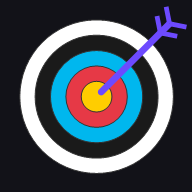

Barebow Tracker Abrir la app →Toca la diana donde ha entrado tu flecha y Barebow Tracker calcula la puntuación, la media y tu récord. Para sala 18 m y exterior 50 m, en iPhone y Android.
Sin hojas de papel ni calculadora: céntrate en tirar.
Toca el punto de impacto y la puntuación se calcula sola, X incluidas. Botón M para los fallos.
Sala 18 m (60 flechas, series de 3) y exterior 50 m (72 flechas, series de 6).
Mapa de agrupación, análisis por flecha numerada, por orden en la serie y por serie. Detecta flechas dañadas, fatiga y desvíos, y te dice qué revisar.
Guarda cada sesión con fecha, series y media para ver cómo progresas.
Una vez instalada funciona sin cobertura: ideal para campos de tiro al aire libre.
Sin cuentas ni servidores: tus puntuaciones solo se guardan en tu móvil.
No hace falta tienda de aplicaciones. Queda en tu pantalla de inicio como cualquier otra app.
Sí, completamente gratis y sin anuncios.
No. La sesión en curso y el histórico se guardan en el móvil automáticamente. Sí se pierden si borras los datos del navegador o desinstalas la app.
Sí, funciona en cualquier navegador moderno, aunque está pensada para el móvil.